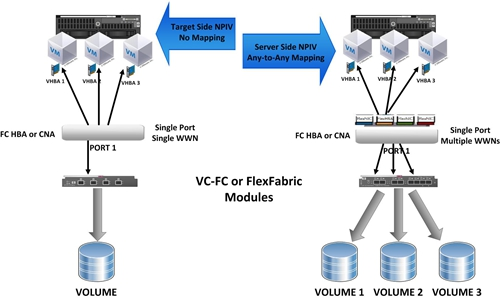

For those of us in the programming world, we have now reached a turning point. Ten years ago, programmers were flocking to dynamic languages. For most of us, dynamic languages not only made programming easier, but also represented a trend. Today, dynamic languages no longer enjoy special favor. Programmers now use a mix of new and old languages to develop projects. I can't help but ask: in order to stay competitive, which programming languages do programmers most need to master for good?
Before we discuss which programming languages will be popular in the future, let's first look at the similarities and differences between programming languages.
Static languages vs. dynamic languages
When we talk about dynamic languages, the "dynamic" actually refers to variable types. When writing a program in a dynamic language, you can declare a variable and then change its type during program execution. The opposite of dynamic languages is static languages, also called strongly typed languages. For example, C++ and Java are strongly typed languages, while JavaScript, PHP, and Perl are dynamically typed languages.
In C++, you must specify the type of a variable when declaring it. During program execution, if you try to change the variable's type, the compiler will report an error. The same is true in Java.

But JavaScript is different. In a JavaScript program, the type of a variable can be changed during execution. In fact, when declaring a variable, you don't need to specify its type. When using a variable, you can first assign an integer to it, and then overwrite that integer with a string. This is all allowed in dynamically typed languages.
Although dynamic languages have only recently become popular, the concept was actually proposed 50 years ago.
Functional languages
Along with the development of dynamic languages, people's interest in functional languages has also grown. In functional languages, functions themselves can be stored in variables, and functions stored in variables can be passed as arguments to other functions. Most languages today support functional programming to some extent. For example, C++ allows programmers to pass function pointers. Languages like JavaScript make passing functions even easier. Therefore, C++ is generally not considered a true functional language, while JavaScript is considered a functional language, and Haskell is generally regarded as an excellent example of a functional language.
Garbage collection mechanism
In theory, as long as you write code correctly, you won't have any bugs. This sounds nice. But in reality, when you work with many other programmers on a large project, there is one bug that often appears: memory leaks. You define a variable, but after using it, you fail to reclaim that memory in time. That is what we call a memory leak. If a memory leak occurs and is not detected in time, as the program runs longer, it grows larger until it consumes all the system's memory, and then the system crashes. Sounds terrible!

You might say, if you free memory promptly after every use of a variable, won't memory leaks be avoided? The idea is good, but the actual situation can be much more complicated. For example, you create a linked list to store data, and this linked list is passed to another function written by someone else. In that function, the linked list is copied, but you don't know that. Should you delete the linked list or keep it? Given this kind of situation, programmers came up with a workaround: hand over memory reclamation to the system. When you no longer use a variable, the system scans memory to find the memory that is no longer used, and then actively reclaims it. This is called a garbage collection mechanism. For newly developed languages, this is a very important feature. The idea behind garbage collection is to make programming easier, allowing programmers to focus on creating great software.
It should be noted that there are indeed several different garbage collection mechanisms: one is for the system to periodically scan memory and find memory that is no longer used; the other is for the system to keep a count for each variable and, once it finds the variable is no longer used, delete it immediately. Technically, the latter is not a garbage collection mechanism, but rather "reference counting". However, the effect achieved is the same.
Virtual machines

When Java burst onto the scene in the mid-1990s, people were bothered by the fact that it didn't directly compile code into assembly language. Unlike C++, Java first compiles the program into an intermediate code called bytecode. At runtime, the system invokes a virtual machine to execute the bytecode, and sometimes even compiles the bytecode into assembly code. When this compilation approach first appeared, programmers complained about its speed, but of course that is no longer a problem now. Many languages run on virtual machines, such as Java and C# mentioned earlier. Languages of this type have now made great progress in speed.
Languages
With all that said, which languages should programmers actually learn? Below are five languages that will be in high demand in future jobs. In addition, I've listed a sixth language as an "honorable mention".

JavaScript, HTML5, and CSS3：
Technically speaking, HTML5 is not a language but a technology. Together with CSS3 and JavaScript, this technology allows you to build web-based applications. You can create software that runs in a browser. The advantage is that the applications you build will have unprecedented portability—they can run on almost all devices, including phones. A few years ago, Facebook began using HTML5 to build its mobile apps. They were ahead of their time; HTML5 wasn't mature then. After a while, they returned to the traditional model. Over the past two years, browsers have begun implementing the best HTML5 technologies, and demand for JavaScript has accordingly increased. If you want to stay competitive, this is a technology you must learn. (On the server side, many large companies use JavaScript in the form of Node.js.)
JavaScript example:
The following example shows how JavaScript stores a function in a variable and then passes it to another function. To learn JavaScript, see:JavaScript Tutorial。
var myfunc = function() {
alert('hi');
};
setTimeout(myfunc, 2000);
C#：
Fifteen years ago, Microsoft created C#, and C# has continued to grow and thrive since then. C#'s syntax is similar to Java (and also to C++). Visual Studio is the preferred software for C# programming, and it is available in both free and paid versions.
C# is a strongly typed language with a virtual machine. The initial release had very little support for functional programming. Around 2006, Microsoft added some functional programming features to the language. Like Java, C# also has its own garbage collection mechanism.
C# example:
The example defines a class called Program, which contains a function called Main. The program starts running from the Main function. The Main function defines a strongly typed integer variable x and prints the value of x on the screen. To learn C#, see:C# Tutorial。
using System;
class Program
{
static void Main()
{
int x = 1000;
Console.WriteLine(x);
}
}
Java：
Java is about to celebrate its 20th birthday. Even today, Java continues to develop and mature. In 2004, a colleague of mine said it was a "toy language". After going through its early growing pains, Java is no longer a toy language: it supports countless websites and databases, and open-source office suites have also been developed in Java. Looking at it now, Java's future is still bright.
Java is a strongly typed language that runs on a virtual machine with a built-in garbage collection mechanism. Although it is not a functional language, it does have some functional programming features.
Java example:
Java and C# are similar in many ways. In a Java program, execution starts from the main function. Like the C# example above, the main function defines a strongly typed integer variable x and prints the value of x on the screen. To learn Java, see:Java Tutorial。
public class HelloWorld
{
public static void main(String[] args) {
int x = 1000;|
System.out.println(x);
}
}
PHP：
PHP is an easy-to-use general-purpose programming language. Its syntax is similar to Java and C++. At a very simple level, PHP is used to embed changeable text content in web pages. For example, you might have PHP code in your webpage that prints the current date. When the webpage code is sent to the browser, the corresponding PHP code prints the current date on the screen. PHP can do far more than print dates on webpages. PHP's class libraries can manipulate databases (almost any database you can think of), perform scientific calculations, and process text. PHP's future remains bright.
PHP example:
PHP code is embedded in an HTML document. This PHP code sets the time zone to Los Angeles and then prints the current time. When the browser parses the HTML document, the PHP code portion is replaced by the output of that code. So what is finally displayed on the screen is "Hello! The current time is", followed by the current time. To learn PHP, see:PHP Tutorial。
<html>
<body>
Hello! The current time is
<?php
date_default_timezone_set('America/Los_Angeles');
echo (strftime('%c'));
?>
</body>
</html>
Swift：
This is a brand-new language created by Apple. Generally speaking, I wouldn't recommend that people learn a brand-new language. But keep in mind that we're talking about Apple, and you can already use this brand-new language to create iOS apps. In fact, there are already signs that Swift will become the future of iOS programming. Swift's syntax is very similar to JavaScript, but without semicolons and parentheses.

Swift is a strongly typed language that runs on a virtual machine with a garbage collection mechanism.
Swift example:
The example defines a variable called str that stores a string. Although the type of str is not explicitly stated, Swift is strongly typed, and the compiler determines that str is a string type based on the string on the right side of the assignment statement. To learn Swift, see:Swift Beginner Tutorial。
var str = "Hello, World!" println (str)
Erlang：
Erlang is a programming language invented by Ericsson engineers in 1986. Originally a language designed specifically for the telecommunications field, it has now grown into a general-purpose programming language and is thriving in cloud-based, high-performance parallel computing. People now use Erlang to build powerful software such as CouchDB and Riak. It is a distinctive language, with a very unusual way of handling strings, but it is also easy to learn.
Should we learn Erlang? Although there are not many jobs requiring Erlang, if you truly master the language, you will likely land an excellent job. It is a trade-off. Before you truly master the language, you need to invest a lot of effort, but once you succeed, the rewards are also high.
Erlang examples:
Below is a complex version of the "hello world" example. Remember, Erlang is a mature language. If you really intend to learn it, please visit:http://learnyousomeerlang.com。
-module(hello).
-export([start/0]).
start() ->
spawn(fun() -> loop() end).
loop() ->
receive
hello ->
io:format("Hello, World!~n"),
loop();
goodbye ->
ok
Final Thoughts
Programmers can certainly find jobs anywhere, but not necessarily in a position you particularly like. The key is to learn truly useful technologies and find that good job that belongs to you. Learning JavaScript, C#, Java, PHP, or C++ won't be wrong. If you start learning Swift, the future employment prospects are excellent. If you want to try your hand at high-performance programming, take a look at Erlang, although jobs requiring Erlang may not appear right away. No matter which language you are currently devoted to, you must learn it down-to-earth and master it; that is the key.
(English source:News.Dice, translator: moqiguzhu)
Click me to share notes
<p style="font-size:14px;">Notes need to be an extension of this article's content!</p><br> <p style="font-size:12px;"><a href="../tougao.html" target="_blank">Article submission, click here</a></p> <p style="font-size:14px;"><a href="./runoob-user-test-intro.html" target="_blank">How to get a registration invitation code</a></p> <h3 class="text-muted"><i class="fa fa-info-circle" aria-hidden="true"></i> Before sharing notes, you must <a href=".." class="runoob-pop">log in</a>!</h3> <p><a href="./runoob-user-test-intro.html" target="_blank">How to get a registration invitation code</a></p>